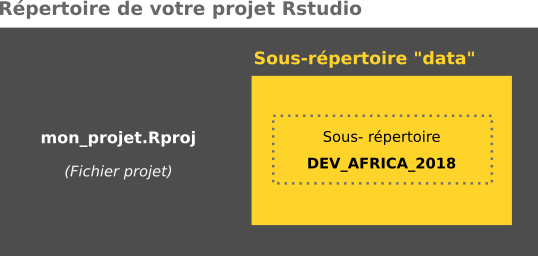

Géomatique avec R - raster
Le package terra pour manipuler les données géographiques RASTER
Note
Le support de ce cours est disponible en ligne. Il s’agit d’un manuel initialement conçu pour accompagner le cours ‘Cartographie avec R’ du Master 2 Géomatique, géodécisionnel, géomarketing et multimédia (G2M) de l’Université Paris 8 Vincennes - Saint-Denis (France). Vous pouvez envoyer vos remarques et suggestions aux auteurs en postant une issue sur le dépôt GitHub de ce document.
Exercice
1. Créez un projet Rstudio
File/New Project/New Directory…
2. Téléchargez les données suivantes :
| Intitulé | Téléchargement |
|---|---|
| Données pays africains (UN-CEPII) | Download |
3. Placez les données (décompressées) dans le répertoire de votre projet, de la façon suivante :
7. Exportez le graphique à l’aide d’une fonction (format png)
Un peu d’aide ?
dev.print(device = ..., file = "...")